目录
- Two-stage vs One-stage Detectors
- YOLO: You Only Look Once Workflow Network Architecture Loss Function
- SSD: Single Shot MultiBox Detector Image Pyramid Workflow Loss Function
- YOLOv2 / YOLO9000 YOLOv2 Improvement YOLO9000: Rich Dataset Training
- RetinaNet Focal Loss Featurized Image Pyramid Model Architecture
- YOLOv3
- Reference
在中，我们回顾了 R-CNN 系列模型。它们都是基于区域的目标检测算法，虽然精度较高，但在自动驾驶等某些应用中可能速度太慢。在第 4 部分，我们只关注快速的目标检测模型，包括 SSD、RetinaNet 以及 YOLO 系列模型。傻瓜式目标检测系列第 3 篇：R-CNN 家族
本系列所有文章的链接： [] [] [] []。傻瓜式目标检测教程 第一部分：梯度向量、HOG 与 Selective Search傻瓜式目标检测系列之二：CNN、DPM 与 Overfeat傻瓜式目标检测系列第 3 篇：R-CNN 家族目标检测第 4 部分：快速检测模型
两阶段与单阶段检测器
R-CNN 系列模型都是基于区域的。检测过程分为两个阶段：(1) 首先，模型通过选择性搜索或区域提议网络提出一组感兴趣区域。这些提议区域是稀疏的，因为潜在的边界框候选数量可以是无限的。(2) 然后分类器仅处理这些区域候选。
另一种不同的方法则跳过区域提议阶段，直接在密集采样的可能位置上运行检测。这就是单阶段目标检测算法的工作方式。它更快、更简单，但可能在一定程度上牺牲性能。
本文介绍的所有模型都是单阶段检测器。
YOLO: You Only Look Once
YOLO 模型（“You Only Look Once”；Redmon et al., 2016）是构建快速实时目标检测器的首次尝试。由于 YOLO 不经过区域提议步骤，且只对有限数量的边界框进行预测，因此其推理速度极快。
工作流程
- Pre-train a CNN network on image classification task.
- Split an image into S \times S cells. If an object’s center falls into a cell, that cell is “responsible” for detecting the existence of that object. Each cell predicts (a) the location of B bounding boxes, (b) a confidence score, and (c) a probability of object class conditioned on the existence of an object in the bounding box. The coordinates of bounding box are defined by a tuple of 4 values, (center x-coord, center y-coord, width, height) — (x, y, w, h), where x and y are set to be offset of a cell location. Moreover, x, y, w and h are normalized by the image width and height, and thus all between (0, 1]. A confidence score indicates the likelihood that the cell contains an object: Pr(containing an object) x IoU(pred, truth); where Pr = probability and IoU = interaction under union. If the cell contains an object, it predicts a probability of this object belonging to every class C_i, i=1, \dots, K: Pr(the object belongs to the class C_i | containing an object). At this stage, the model only predicts one set of class probabilities per cell, regardless of the number of bounding boxes, B. In total, one image contains S \times S \times B bounding boxes, each box corresponding to 4 location predictions, 1 confidence score, and K conditional probabilities for object classification. The total prediction values for one image is S \times S \times (5B + K), which is the tensor shape of the final conv layer of the model.
- The final layer of the pre-trained CNN is modified to output a prediction tensor of size S \times S \times (5B + K).
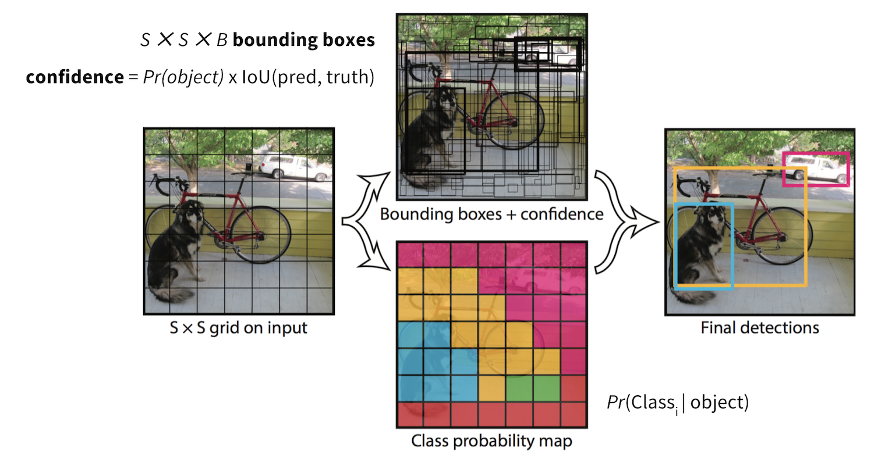
网络架构
基础模型类似于GoogLeNet，只是将 Inception 模块替换为 1×1 和 3×3 卷积层。通过在整个卷积特征图上接两个全连接层，得到形状为 S \times S \times (5B + K) 的最终预测。
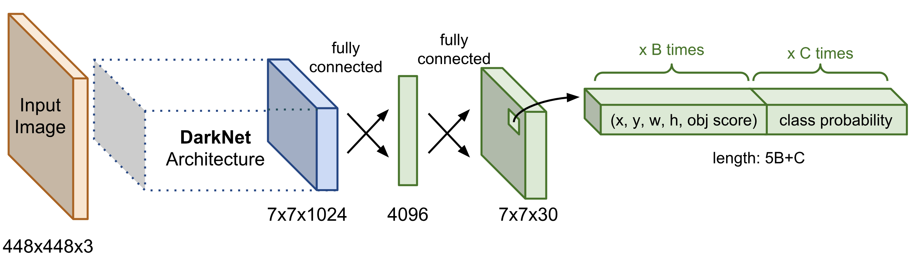
损失函数
损失由两部分组成：边界框偏移预测的定位损失和条件类别概率的分类损失。两部分都采用平方误差求和。使用了两个缩放参数来分别控制我们希望增加边界框坐标预测损失的权重（\lambda_\text{coord}），以及减少不含物体的边界框置信度预测损失的权重（\lambda_\text{noobj}）。降低背景框带来的损失非常重要，因为大多数边界框都不包含物体。在论文中，模型将 \lambda_\text{coord} = 5 和 \lambda_\text{noobj} = 0.5 分别设为这两个值。
注意：在原始 YOLO 论文中，损失函数对置信度使用的是 C_i 而非 C_{ij}。根据我自己的理解进行了修正，因为每个边界框都应该有独立的置信度分数。如果您不同意，欢迎指出。谢谢。
其中，
- \mathbb{1}_i^\text{obj}：指示单元格 i 是否包含物体的指示函数。
- \mathbb{1}_{ij}^\text{obj}：指示单元格 i 的第 j 个边界框是否“负责”该物体的预测（见图 3）。
- C_{ij}：单元格 i 的置信度分数，Pr(包含物体) * IoU(预测, 真实)。
- \hat{C}_{ij}：预测的置信度分数。
- \mathcal{C}：所有类别的集合。
- p_i(c)：单元格 i 包含类别 c \in \mathcal{C} 物体的条件概率。
- \hat{p}_i(c)：预测的条件类别概率。
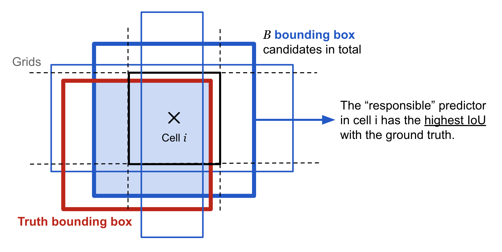
损失函数仅在该网格单元存在物体时才惩罚分类误差（\mathbb{1}_i^\text{obj} = 1），也仅在该预测器“负责”真实框时才惩罚边界框坐标误差（\mathbb{1}_{ij}^\text{obj} = 1）。
作为单阶段目标检测器，YOLO 速度极快，但由于边界框候选数量有限，它在识别形状不规则的物体或成群的小物体时表现不佳。
SSD: Single Shot MultiBox Detector
单次检测器（SSD；Liu et al, 2016）是最早尝试利用卷积神经网络金字塔特征层次结构来高效检测不同尺度物体的模型之一。
图像金字塔
SSD 使用在 ImageNet 上预训练的VGG-16 模型作为基础网络来提取有用的图像特征。 在 VGG16 之上，SSD 额外添加了几个尺寸逐渐减小的卷积特征层。这些层可以看作是图像在不同尺度上的金字塔表示。从直观上讲，早期层中较大且细粒度的特征图擅长捕捉小物体，而较小且粗粒度的特征图则更适合检测大物体。在 SSD 中，检测在每个金字塔层上进行，针对不同尺度的物体。
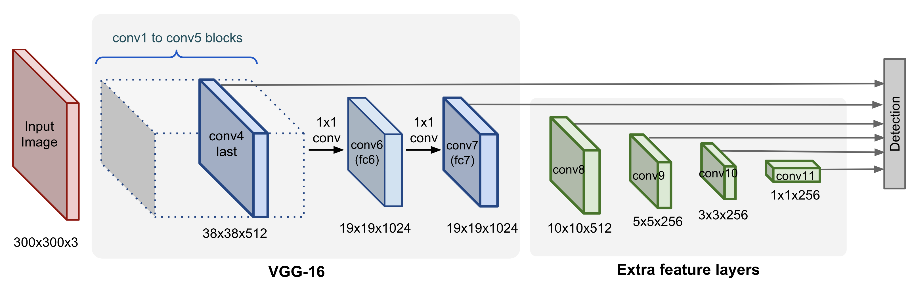
工作流程
与 YOLO 不同，SSD 不会将图像划分成任意大小的网格，而是为特征图上的每个位置预测预定义锚框（论文中称为“default boxes”）的偏移量。每个锚框都有相对于对应单元格的固定大小和位置。所有锚框以卷积的方式覆盖整个特征图。
不同层级的特征图具有不同的感受野大小。不同层级的锚框会进行尺度缩放，使得一个特征图仅负责检测某一特定尺度的物体。例如，在图 5 中，狗只能在 4×4 特征图（较高层）中被检测到，而猫则由 8×8 特征图（较低层）捕获。
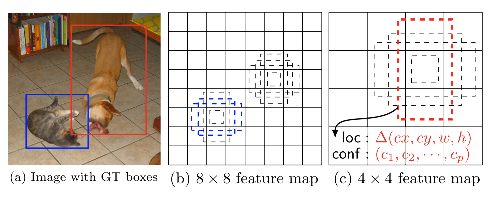
锚框的宽度、高度和中心位置都被归一化到 (0, 1)。在第 \ell 层大小为 m \times n×i=1,\dots,n, j=1,\dots,m 的特征图上，位置 (i, j) 处，我们有一个与层级成比例的独特线性尺度，以及 5 种不同的框长宽比（宽高比），此外当长宽比为 1 时还有一个特殊的尺度（为什么需要这个？论文没有解释，可能只是一个启发式技巧）。这样每个特征单元格总共有 6 个锚框。
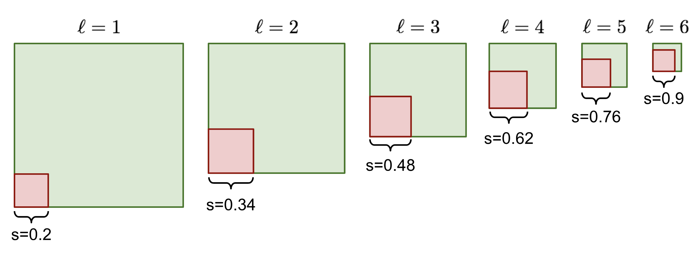
在每个位置，模型通过对每个 k 个锚框应用 3 \times 3 \times p 卷积滤波器（其中 p 是特征图的通道数），输出 4 个偏移量和 c 个类别概率。因此，对于大小为 m \times n 的特征图，我们需要 kmn(c+4) 个预测滤波器。
损失函数
与 YOLO 一样，损失函数是定位损失与分类损失之和。
\mathcal{L} = \frac{1}{N}(\mathcal{L}_\text{cls} + \alpha \mathcal{L}_\text{loc})
其中 N 是匹配的边界框数量，\alpha 用于平衡两种损失的权重，通过交叉验证选定。
定位损失是预测边界框修正量与真实值之间的smooth L1 损失。坐标修正变换与傻瓜式目标检测系列第 3 篇：R-CNN 家族在中所做的一致。傻瓜式目标检测系列第 3 篇：R-CNN 家族
其中 \mathbb{1}_{ij}^\text{match} 表示第 i 个坐标为 (p^i_x, p^i_y, p^i_w, p^i_h) 的边界框是否与第 j 个坐标为 (g^j_x, g^j_y, g^j_w, g^j_h) 的真实框匹配（针对任意物体）。d^i_m, m\in\{x, y, w, h\} 是预测的修正项。变换方式可参考。傻瓜式目标检测系列第 3 篇：R-CNN 家族
分类损失是对多个类别的 softmax 损失（TensorFlow 中为softmax_cross_entropy_with_logits）：
其中 \mathbb{1}_{ij}^k 表示第 i 个边界框与第 j 个真实框是否匹配为类别 k 的物体。\text{pos} 是匹配边界框的集合（共 N 个），\text{neg} 是负样本集合。SSD 使用来选择容易被错误分类的负样本构成这个 \text{neg} 集合：将所有锚框按物体置信度排序后，挑选前面的候选样本进行训练，使得负样本与正样本的比例最多为 3:1。傻瓜式目标检测系列第 3 篇：R-CNN 家族
YOLOv2 / YOLO9000
YOLOv2（Redmon & Farhadi, 2017）是 YOLO 的增强版本。YOLO9000 构建在 YOLOv2 之上，但使用联合数据集训练，该数据集结合了 COCO 检测数据集和 ImageNet 中前 9000 个类别。
YOLOv2 的改进
应用了多种修改来使 YOLO 的预测更准确且更快，包括：
1. BatchNorm 有帮助：在所有卷积层上添加 Batch Normalization，显著改善了收敛性。
2. 图像分辨率很重要：使用高分辨率图像对基础模型进行微调，可以提升检测性能。
3. 卷积锚框检测：YOLOv2 不再使用全连接层在整个特征图上预测边界框位置，而是像 Faster R-CNN 一样使用卷积层来预测锚框的位置。空间位置预测和类别概率预测被解耦。总体上，这种改动略微降低了 mAP，但提高了召回率。
4. 边界框尺寸的 K-means 聚类：与 Faster R-CNN 使用人工挑选的锚框尺寸不同，YOLOv2 在训练数据上运行 K-means 聚类来寻找好的锚框尺寸先验。距离度量基于 IoU 分数设计：
其中 x 是真实框候选，c_i 是其中一个聚类中心。最佳的聚类中心数量（即锚框数量）k 可以使用elbow method来选择。
通过聚类生成的锚框在固定数量的框下提供了更好的平均 IoU。
5. 直接位置预测：YOLOv2 以一种不会偏离中心位置太远的方式来建模边界框预测。如果像区域提议网络那样，框的位置预测可以落在图像任意位置，模型训练可能会变得不稳定。
给定网格单元左上角在 (c_x, c_y)、大小为 (p_w, p_h) 的锚框，模型预测偏移和缩放 (t_x, t_y, t_w, t_h)，对应的预测边界框 b 的中心为 (b_x, b_y)、大小为 (b_w, b_h)。置信度分数是另一个输出 t_o 经过 sigmoid（\sigma）得到的结果。
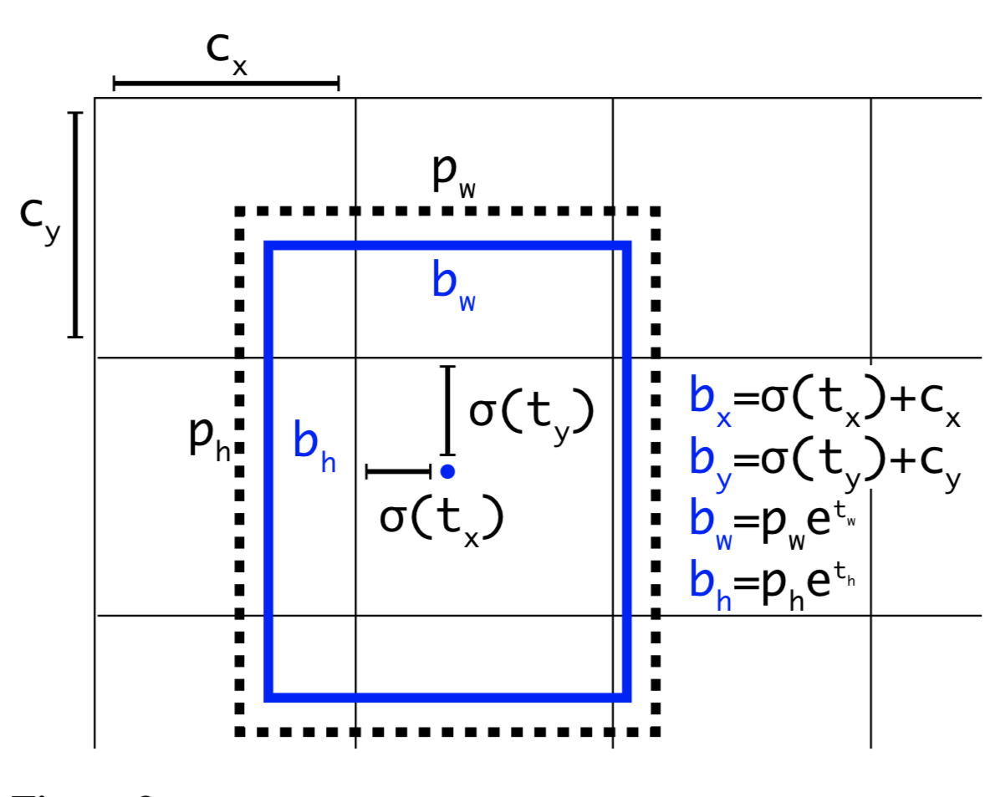
6. 添加细粒度特征：YOLOv2 加入了一个 passthrough 层，将早期层的细粒度特征带到最后的输出层。该 passthrough 层的机制类似于 ResNet 中的恒等映射，用于从前一层提取更高维度的特征。这带来了 1% 的性能提升。
7. 多尺度训练：为了让模型对不同尺寸的输入图像具有鲁棒性，每训练 10 个 batch 就随机采样一个新的输入尺寸。由于 YOLOv2 的卷积层将输入维度下采样 32 倍，新采样的尺寸必须是 32 的整数倍。
8. 轻量级基础模型：为了让预测更快，YOLOv2 采用了一个轻量级的基础模型 DarkNet-19，它包含 19 个卷积层和 5 个最大池化层。其关键在于在 3×3 卷积层之间插入平均池化和 1×1 卷积滤波器。
YOLO9000：丰富数据集的联合训练
因为对图像标注边界框来进行目标检测比对图像打分类标签昂贵得多，论文提出了一种将小型目标检测数据集与大型 ImageNet 结合的方法，使得模型能够接触到数量多得多的物体类别。YOLO9000 的名字来源于 ImageNet 中排名前 9000 的类别。在联合训练过程中，如果输入图像来自分类数据集，则只反向传播分类损失。
检测数据集的标签数量少得多且更为泛化，而且跨数据集的标签往往不是互斥的。例如，ImageNet 有“Persian cat”这个标签，而在 COCO 中同一张图像可能被标为“cat”。在没有互斥性的情况下，对所有类别应用 softmax 是不合理的。
为了高效地将 ImageNet 标签（1000 个类别，细粒度）与 COCO/PASCAL（少于 100 个类别，粗粒度）标签合并，YOLO9000 参考WordNet构建了一个层次树结构，使得泛化标签更靠近根节点，而细粒度类别标签作为叶子节点。这样，“cat”就是“Persian cat”的父节点。
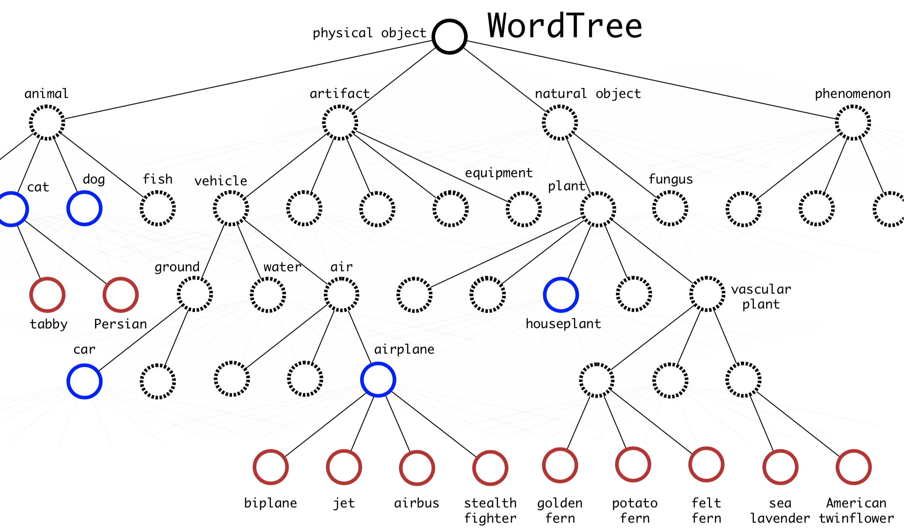
要预测某个类别节点的概率，我们可以沿着从该节点到根节点的路径计算：
Pr("persian cat" | contain a "physical object")
= Pr("persian cat" | "cat")
Pr("cat" | "animal")
Pr("animal" | "physical object")
Pr(contain a "physical object") # confidence score.
注意 Pr(包含“物理物体”）就是置信度分数，在边界框检测流程中单独预测。条件概率预测路径可以在任意步骤停止，取决于哪些标签可用。
RetinaNet
RetinaNet（Lin et al., 2018）是一种单阶段密集目标检测器。其两个关键组成部分是特征化图像金字塔和 Focal Loss 的使用。
Focal Loss
目标检测模型训练中的一个主要问题是背景（不含物体）和前景（包含感兴趣物体）之间的极度不平衡。Focal Loss 的设计目的是对难分类、容易误分类的样本（例如带有噪声纹理的背景或部分物体）赋予更高权重，同时降低容易样本（例如明显为空的背景）的权重。
从普通的二分类交叉熵损失开始，
其中 y \in \{0, 1\} 是真实二值标签，表示边界框是否包含物体，p \in [0, 1] 是预测的物体存在概率（即置信度分数）。
为方便记号，
容易分类的样本具有较大的 p_t \gg 0.5，即当 p 非常接近 0（y=0 时）或 1（y=1 时），会产生不可忽视的损失。Focal Loss 显式地在交叉熵的每一项前乘上一个权重因子 (1-p_t)^\gamma, \gamma \geq 0，使得当 p_t 较大时权重变小，从而降低容易样本的权重。
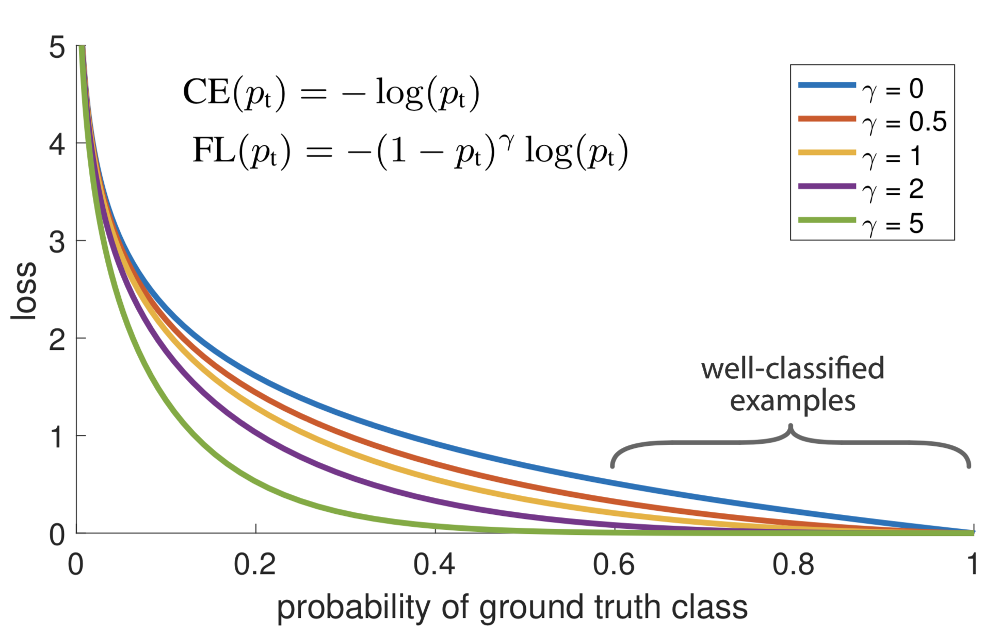
为了更好地控制权重函数的形状（见图 10），RetinaNet 使用了 \alpha 平衡的 Focal Loss 变体，其中 \alpha=0.25, \gamma=2 的效果最好。
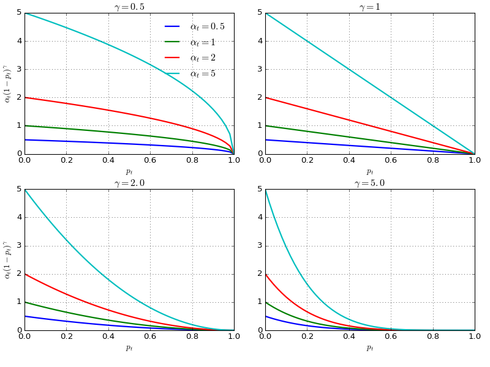
特征化图像金字塔
特征化图像金字塔（Lin et al., 2017）是 RetinaNet 的骨干网络。它遵循 SSD 中图像金字塔的思路，为不同尺度下的目标检测提供基础视觉组件。
特征金字塔网络的核心思想如图所示。其基本结构包含一系列金字塔层级，每个层级对应网络的一个阶段。一个阶段包含多个相同尺寸的卷积层，阶段尺寸按因子 2 缩小。我们将第 i 个阶段的最后一层记为 C_i。
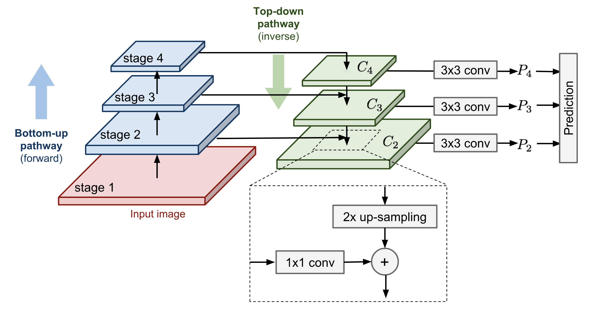
两条路径连接卷积层：
- Bottom-up pathway is the normal feedforward computation.
- Top-down pathway goes in the inverse direction, adding coarse but semantically stronger feature maps back into the previous pyramid levels of a larger size via lateral connections. First, the higher-level features are upsampled spatially coarser to be 2x larger. For image upscaling, the paper used nearest neighbor upsampling. While there are many image upscaling algorithms such as using deconv, adopting another image scaling method might or might not improve the performance of RetinaNet. The larger feature map undergoes a 1x1 conv layer to reduce the channel dimension. Finally, these two feature maps are merged by element-wise addition. The lateral connections only happen at the last layer in stages, denoted as \{C_i\}, and the process continues until the finest (largest) merged feature map is generated. The prediction is made out of every merged map after a 3x3 conv layer, \{P_i\}.
根据消融实验，特征化图像金字塔设计中各组件的重要性排序为：1×1 侧向连接 > 多层跨尺度检测 > 自顶向下特征丰富 > 金字塔表示（与仅使用最细一层相比）。
模型架构
特征金字塔构建在 ResNet 架构之上。Recall ResNet 有 5 个卷积块（= 网络阶段 / 金字塔层级）。第 i 个金字塔层级的最后一层 C_i 的分辨率比原始输入低 2^i 倍。
RetinaNet 使用金字塔层级 P_3 到 P_7：
- P_3 到 P_5 是从 ResNet 对应的残差阶段 C_3 到 C_5 计算得到的。它们通过自顶向下和自底向上两条路径连接。
- P_6 是通过在 C_5 之上进行 3×3 步长为 2 的卷积得到的。
- P_7 对 P_6 应用 ReLU 和 3×3 步长为 2 的卷积。
在 ResNet 上增加更高的金字塔层级可以提升大物体检测的性能。
与 SSD 一样，检测在所有金字塔层级上进行，对每个融合后的特征图做出预测。由于所有预测共享同一个分类器和边界框回归器，因此它们的通道维度都被统一设为 d=256。
每个层级有 A=9 个锚框：
- 基础尺寸对应于在 P_3 到 P_7 上的面积分别为 32^2 到 512^2 像素。有三种尺寸比例 \{2^0, 2^{1/3}, 2^{2/3}\}。
- 对于每种尺寸，又有三种长宽比 {1/2, 1, 2}。
像往常一样，对于每个锚框，模型在分类子网络中为 K 个类别分别输出类别概率，并在边界框回归子网络中回归从该锚框到最近真实物体的偏移量。分类子网络采用前面介绍的 Focal Loss。
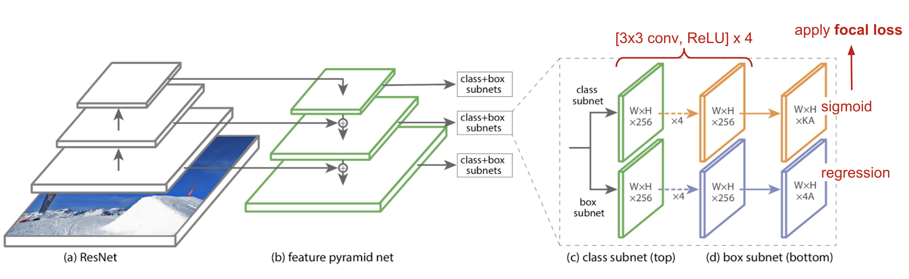
YOLOv3
YOLOv3 是通过在 YOLOv2 上应用大量设计技巧得到的。其改进受到了目标检测领域最新进展的启发。
主要改动如下：
1. 使用 Logistic 回归预测置信度：YOLOv3 对每个边界框使用 Logistic 回归来预测置信度分数，而 YOLO 和 YOLOv2 对分类项使用平方误差求和（见上面的损失函数）。偏移预测的线性回归导致 mAP 有所下降。
2. 类别预测不再使用 softmax：预测类别置信度时，YOLOv3 对每个类别使用多个独立的 Logistic 分类器，而不是一个 softmax 层。这一点特别有用，因为一张图像可能有多个标签，且并非所有标签都保证互斥。
3. 以 Darknet + ResNet 作为基础模型：新的 Darknet-53 仍然依赖连续的 3×3 和 1×1 卷积层，与原始 Darknet 架构类似，但加入了残差块。
4. 多尺度预测：受图像金字塔启发，YOLOv3 在基础特征提取器之后添加了若干卷积层，并在这些卷积层中以三种不同尺度进行预测。这样，它需要处理总体上更多不同尺寸的边界框候选。
5. 跨层拼接：YOLOv3 还在两个预测层（输出层除外）与更早的细粒度特征图之间添加了跨层连接。模型首先对粗糙特征图进行上采样，然后通过拼接与之前的特征进行融合。与细粒度信息的结合使其更擅长检测小物体。
有趣的是，Focal Loss 对 YOLOv3 没有帮助，可能是因为它使用了 \lambda_\text{noobj} 和 \lambda_\text{coord}——它们增加了边界框位置预测的损失，同时降低了背景框置信度预测的损失。
总体而言，YOLOv3 的性能和速度都优于 SSD，性能不如 RetinaNet，但速度快 3.8 倍。
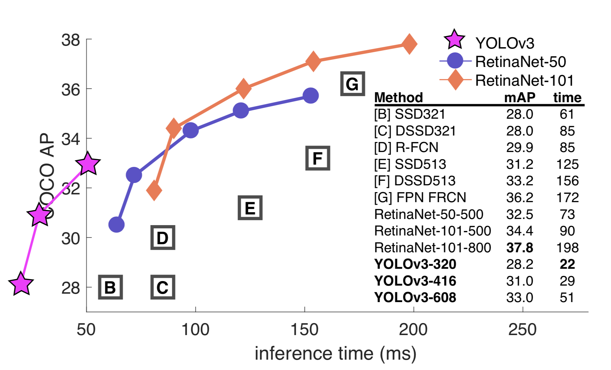
引用格式：
@article{weng2018detection4,
title = "Object Detection Part 4: Fast Detection Models",
author = "Weng, Lilian",
journal = "lilianweng.github.io",
year = "2018",
url = "https://lilianweng.github.io/posts/2018-12-27-object-recognition-part-4/"
}
参考文献
[1] Joseph Redmon, et al. “You only look once: Unified, real-time object detection.” CVPR 2016.
[2] Joseph Redmon and Ali Farhadi. “YOLO9000: Better, Faster, Stronger.” CVPR 2017.
[3] Joseph Redmon, Ali Farhadi. “YOLOv3: An incremental improvement.”.
[4] Wei Liu et al. “SSD: Single Shot MultiBox Detector.” ECCV 2016.
[5] Tsung-Yi Lin, et al. “Feature Pyramid Networks for Object Detection.” CVPR 2017.
[6] Tsung-Yi Lin, et al. “Focal Loss for Dense Object Detection.” IEEE transactions on pattern analysis and machine intelligence, 2018.
[7] “What’s new in YOLO v3?” by Ayoosh Kathuria on “Towards Data Science”, Apr 23, 2018.